Södermalm i tid och rum
Årstaholmar
Ur TANTO, en utmark, Per Anders Fogelström, 1978
Carl Reinhold BerchMedan brännvinsbränneriet ännu var i full verksamhet hade gården på Årsta holmar fått nya invånare, kungliga sekreteraren och translatorn i Kanslikollegium Johan Fredrik Schoerbing (1756-1849) och hans maka Brita. Årstafrun noterar det "nya herrskapet på Holmen" i september 1794. Förbindelserna mellan herrskapen på Årsta och Årsta holmar blev ganska livliga men långt ifrån konfliktfria.
När sekreterare Schoerbing dog fanns en intresserad köpare som gärna ville rusta upp och överta den då ganska förfallna gården. På så sätt skulle "utkantsromantiken" och "vildmarkslivet" blomma upp kort innan industrin i större omfattning än förr präglade livet vid Tanto. Och Årsta holmar få uppleva en sista (?) "glansperiod".
|
Gunnar Olof Hyltén-Cavallius (1818-1889) var en ung smålänning som kommit till Stockholm och blivit anställd som tjänsteman vid Kungliga biblioteket, som då hade sina lokaler i slottet. År 1847 gifte han sig med bokförläggare Zacharias Haeggströms dotter Sophie och bosatte sig på Repslagargatan på Södermalnn, mitt emot svärföräldrarnas hus. Men Hylten-Cavallius trivdes inte i Stockholm och med stadslivet utan ville finna någon lämplig gård i stadens utkanter där han på fritiden kunde ägna sig åt lantligt liv. En kamrat på biblioteket kom att nämna att det fanns ett "landtställe, beläget på holmar i Årstaviken". En septemberdag 1850 begav sig de båda bibliotekstjänstemännen längs den långa Tantogatan ner till Tanto brygga där de ropade på en båt och med den for över sundet. Om vad de fann berättar Hylten-Cavallius: |
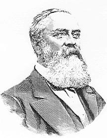 |
"Gården var gammal och förfallen, men ursprungligen mycket välbyggd, omgifven af lummiga träd och med en stor, nu igenvuxen trädgård, der vi ännu funno blommande rosor af ädlaste slag. Öfver en lång stenbro gick vägen öfver till den andra holmen, Tallholmen, som var bergig och bevuxen med stora furor. Vid dess sida låg en tredje holme, Ängsholmen, omgifven af täta vassbänkar, och der några kor gingo och betade. Stället var förtjusande och tilltalade mig genom sjelfva sin ålderdomlighet. Ty gården var byggd på 1740-talet - af den bekante Carl Reinhold Berch. Och fastän den under sin förre egare, den mer än 90-årige gubben Schoerbing, småningom lemnats att förfalla, voro spåren af forntida prakt ännu tydliga i det gamla orangeriet och i de fyra väldiga kastanjer, som gåfvo skugga åt gårdsplanen. Jag hade således funnit hvad jag sökte! Här var stället, der jag ville lefva i undangömd frid, syssla med blommor och jordbruk, och uppfostra mina barn under oskuldsfulla intryck af en ren natur."
|
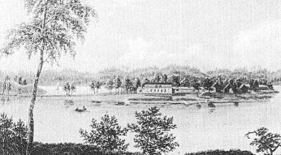  Årsta holmar. Oljemålning från 1860-talet av E Westerlin. Årsta holmar. Oljemålning från 1860-talet av E Westerlin.
|
Redan den 9 november skedde köpet, priset var 7 800 riksdaler banco och under vintern företogs
nödvändiga reparationer. I mars 1851 kunde paret Hylten-Cavallius och deras två döttrar flytta ut, i juni
utökades familjen med en son. Livet på holmarna skildras av den nya ägaren som "sträfsamt, ofta besvärligt, men fullt af huslig och landtlig poesi". Den lilla egendomen visar sig vara mycket bördig. Hustrun sköter trädgård och mjölkkammare och flera gånger i veckan sänds fyllda båtar med frukt och grönsaker till försäljning vid Munkbron. Själv ägnar sig husets herre åt jordbruk och fiske "och blef en väldig Petrus" som fick massor av braxar och abborrar i sina nät och stora |
Många vänner kom ut och hälsade på. De bjöds på nyfångad fisk och "frisk, präktig mjölk", på nyplockade jordgubbar och saftiga frukter. Skalden Herman Sätherberg var så förtjust att han menade att han hade kommit till "lycksalighetens ö". Och på kvällarna samlades man i salen "der Mor hvarje afton sjöng sina skönaste visor, medan Far dansade med sina små."
Men det var inte sommar året runt. Vintertid kunde man roa sig med att åka skridskor på Årstavikens is men ibland höll inte isen och förmådde inte hustru eller tjänstefolk att ta sig ut i den gröna båten och hämta Far när han kom från biblioteket. "När isen lade sig, likasom när den bröt upp, måste vi och vårt folk våga lifvet, för att komma till staden eller till hemmet. Att draga upp vandringsmän, som på vårtiden gingo ned sig emellan Årstalandet och Tanto brygga, blef för mig en slags tjenstebefattning." Och blåsiga nätter måste han stiga upp ur sin varma bädd för att försöka rädda sina båtar som kommit på drift.
Allra värst var ändå att herrskapet på ön levde "rundt omkring omgifna av det myckna slödder, som bygger och bor i stadens utkanter. Jag måste flera gånger leverera ordentliga bataljer med detta pack: strider, i hvilka blod stundom flöt. Men jag satte mig småningom i respekt; och --- vann jag slutligen en sådan aktning, att hvart enda barn helsade på mig, när jag vandrade utefter Tantogatan."
|
1856 blev Hylten-Cavallius utsedd till chef för den kungliga teatern, Operan. Med tjänsten följde
bostad inne i staden och under några år framåt blev Årsta holmar endast sommarnöje. Men efter
stridigheter och motsättningar vid teatern avgick den nye operachefen redan våren 1860 och blev i
januari 1861 utnämnd till charge d'affaires vid kejserliga brasilianska hovet i Rio de Janeiro, en "reträttpost". Det kändes som att gå i landsflykt. En februaridag
1861 måste Hylten-Cavallius anträda den långa resan och lämna sin familj. "Vid Årstaholmar tog jag kl.
1/2 9 f. m. afsked af mina barn, och jag ser ännu framför mig mina små flickor, stående på berget vid stora
byggningen och vinkande med sina näsdukar under bittra tårar".
Ett drygt år därefter fördes han hem - som invalid. Några år senare kunde han ändå flytta med familjen till den gamla hembygden i Småland och där på sina "förfäders gård" skriva vidare på verket om "Wärend och Wirdarne". |
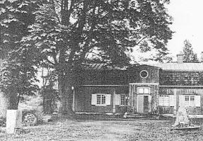  Huvudbyggnaden på Årsta holmar fotograferad av Margareta Cramér 1968. Huvudbyggnaden på Årsta holmar fotograferad av Margareta Cramér 1968.
|
Ivar Johansson har berättat i en intervju att han föddes på holmarna och växt upp där tillsammans med fem syskon. Familjen odlade potatis, vete och råg på Bergholmen (ibland kallad Tallholmen), de hade också grisar och höns. På Lillholmen (eller Ängsholmen) fick några kor man hade beta, därför kallade de den ön för Betesholmen. Modern i familjen gjorde själv smör och ost av mjölken.
|
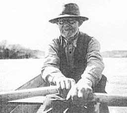 Trädgårdsmästaren Emil Johansson på Årsta holmar, fotograferad i sin båt 1949. |
Dricksvatten gick inte att få på holmarna, trots att de låg mitt i stadens vattentäkt, det hämtades från
Tantosidan. Gott om gäddor fanns däremot i de grunda vikarna, "jag tror att vi satte ut 200 ryssjor en gång".
Men vintertid hade man samma besvär som Hylten-Cavallius haft en gång i tiden. Och ännu värre blev
det sedan Hammarbyleden tillkommit och båtrännor bröts. Under den isfria tiden av året hade
trädgårdsmästaren en tid en egen färja som drogs mellan holmarna och Tanto med hjälp av en uttjänad
stållina från Katarinahissen.
Fadern stannade kvar i det längsta ute på ön, också sedan han blivit ensam. På 1940- och 50-talen fick hans barn tillstånd att gå ut på järnvägsbron för att kasta ner matpaket när det inte gick att ta sig till eller från Årsta holmar. Egentligen tyckte trädgårdsmästaren inte om den vackra Årstabron - för att den skulle komma till hade han tvingats riva sitt växthus. Under byggnadsåren 1924-1929 bodde flera "rallare" och broarbetare med sina familjer i några av husen på holmarna. |
Den väl hittills siste som bott året om på Årsta holmar är Sverre Bernsen som förestod den småbåtsvarvsrörelse som under flera år bedrevs där. Vintertid köpte Bernsens hustru månadskort Stockholm - Älvsjö och hade lov att kasta ut tidningar och matpaket från kupéfönstret.
I dag står 1700-talsgården stängd och förfallen, trädgårdarna har vuxit igen och försvunnit i grönskan. Och ingen vet väl riktigt vad som ska ske med Årsta holmar.
|
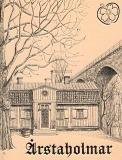 |
ÅRSTAHOLMAR EFTER ÅR 1735 Enligt en ansökan från Gustaf Cronhielm, Grefve till Flosta, Friherre till Åhrsta, Herre till Sundby och Zachariasberg avsöndras Bergholmen, Laholmen och Skiäret från Åhrsta Säterje i Stockholms lähn och Svartlösa härad. "I längd och bredd som de för ögonen finnes och af siön inhägnas..." Denna ansökan ingavs 1735 och två år senare dör Gustaf Cronhielm. Från frälsehemmanet avsöndras en frälselägenhet, vilket innebär att den genom stamhemmanet skall erlägga en årlig frälseränta.
|
Kartor skriver Ahlholmen (eller Gräsholmen), Bergsholmen, Tallholmen och Lilla Skiäret eller Lillholmen; 1701, 1716 och Tillaeus 1733. Men förrättande lantmätaren, tingsrätten, säljaren och köparen skriver Bergholmen, Laholmen och Skiäret och naturligtvis har de rätt. De tre kartritarna hade aldrig ens varit med sin fot därute. Tillaeus tillät sig tom byta det ålderdomliga namnet på viken från Årstaviken (Arusboawijken) till Hornswijken.
|
Den 24 maj 1737 säljer Gustafs son Lars och "hans Kiära Grefwinna och husfru
Magdlen Elenora Posse" trenne små holmar till Carl Reinhold Berck. (Grefwinnan var
styvsyster till Lars). Lagfartsärendet togs upp på sommarting i Fittja giästgifware gård
6 juni 1737, andra gången 13 octobris och oklandrat tredje gången 14 februarii 1738
för att av tjänsteförrättande Carl Stierneroos beviljas fast a den 6 martti 1739.
Nu hade emellertid Berck fått befordran och skulle flytta till Paris. Han hade inte ens hunnit att sätta sin fot på holmarna och köpt dem på förslag av sin broder som ägde mycken egendom på Södermalm. "Som iag för min afresa icke kan hafva den nytta af ofwannämnde trenne holmar, som iag wore närwarandes; Altså transporterar iag härmed på Min K: Syster, Fru Christina Brita Berck. 25 Aug. 1739". ... och Brita var gift med industrimannen Christer Robsahm. Han byggde gården på |
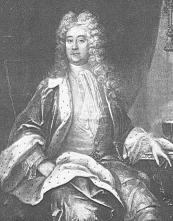 Gustaf Cronhielm |
Bland flera industriprojekt startar Robsahm det första sockerbruket i Tanto som via kronobränneri och annan industriverksamhet utvecklar sig till Nordens största sockerbruk i mitten av 1800-talet. Och det vackraste!
Efter Christers död stannar holmarna i släktens ägo genom att dottern Brita gift med Mårten Tavelin övertar gården. "Mine trenne Frälse-skatteholmar, Bergholmen, Ladholmen och Skiäret".
1783 säljer Tavelins holmarna under samma beteckning till Jacob Möller och hans hustru Maria Rosina Kessler.
Robsahm bodde tidvis ute på holmarna, Möllers endast på somrarna. Möllers hade dock första tiden trädgårdsmästare anställd och en ung piga.
Det var alltså få människor boende därute fram till Schoerbings köp 1794 tillsammans med sin maka Brita Hesse. Nu kunde man vid husförhören räkna intill 20 personer i deras hushåll. Efter Brita Schoerbings död 1829 sjönk antalet personer till 8-10. När Möller/Kessler säljer talas det om Åhrstads Holmarne för första gången.
Inte bara Tillaeus försökte byta namn på viken. I mitten av 1800-talet skriver Paul Roland Ferlin om den norra delen av viken som Tantosjön. Det vann intet gehör. Så sent som 1989 försökte fastighetskontoret införa namnet Västra Holmen på Ahlholmen som borde heta La- (eller Lad-) holmen. Betesholmen och Ängsholmen är inte ovanligt för Lillholmen.
Johan Fredric Schoerbing levde till 1849 och hans leverne skildras av Merta Helena Reenstierna i hennes dagbok. I nära 55 år bodde han därute. Släkten var knappast vid ett enda tillfälle på holmarna och hälsade på, men vid bouppteckningen kom de; Barthelsons, Schoerbings, Lindstedts, Tgelaus och avlidne Werners. Strax därpå köper Hylten-Cavallius holmarna med de två inventarierna: en bryggpanna och två ekstockar.
Gunnar Olof Hylten-Cavallius och hans maka Maria Sofia f Haeggström drabbades av stor sorg när deras son på sin treårsdag drunknade vid bryggan på Årstaholmar 1857. Gustaf Zacharias var född därute.
|
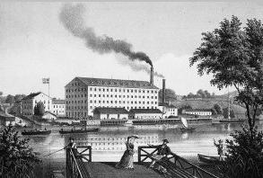 |
När Hylten-Cavallius kom hem från Brasilien som sändebud hos kejsaren, var han
svårt sjuk. Han hade tidigare gått igenom en svår tid under sitt chefskap för
Operan i inbördes intrigspel. Han hade försökt få igång odlingar på holmarna men
delvis misslyckats. Det var naturligt att sälja. Men han hade tydligen förmågan att
få objektet, Årstaholmar, att framstå mer intressant än det i själva verket var. Han
fick betalt! I slutskedet talade han vitt och brett om sin trädskola och fick hans
skriftliga förbehåll att få ta ut plantor från denna vid försäljningen att framstå som
något stort! Det var det inte och han tog inte heller ut några plantor enligt avtal.
Fanns det över huvudtaget något i plantväg att sälja?
|
Stenberg arrenderade holmarna av Hylten-Cavallius innan han köpte. En bild av G. Pabst från 1870-72 visar idyllen vid holmarnas brygga, Stenberg med sin maka Edla och sonen Rudolf Wilhelm. Den 12 december 1865 säljer Hylten-Cavallius till Johan Rudolf Th Stenberg som strax därpå överlåter holmarna på sin kompanjon byggmästare Johan Reedtz, som i sin tur år 1886 säljer till Stockholms stad.
|
Stadens förste arrendator var Lars Berglund som hade med sig 5 barn. Ytterligare 11 personer bodde då därute. 1891 arrenderar Per Adolf Beckius med Anders Axel Blomkvist som trädgårdsmästare. Totalt 10 personer fram till år 1896. 1905 kommer Emil och Ida Johansson till holmarna och då börjar en femtio års period av mycket slit, men också många trivsamheter. Den familjen är den enda som genom odling och lantbruk levt på vad holmarna gett! De får ett eget kapitel med sina minnen samlade (nedan). Rune Sahlström |
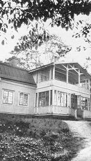 |
Emil och Ida Johansson arrenderade holmarna av Stockholms stad. Året var 1904. "I boet" förde de med sig Emils trädgårdsodlarkunskaper från barnsben och Idas "näsa för affärer" från den lilla matvaruaffären i hörnet Hornsgatan och Ragvaldsgatan på söder som hon hade ägt. Och så hade de också fyra barn med sig; tre flickor och en pojke. Familjen skulle utökas med ytterligare två pojkar som föddes på holmarna.
De kom närmast från Orhem och tilläggas bör att Ida var småländska! Odlingarna hade nog på 1800-talet varit välskötta. Tydligen var det emellertid si och så med skötsel åren innan tillträdet skedde. Men det fanns två starka kunniga människor och familjen hade mat och tak över huvudet och ett bra tak tillika. Gården var fortfarande ståtlig, särskilt om man såg den från Tantosidan med den stora glasverandan i två våningar.
På Tantosidan låg Nordens största sockerbruk, men Johanssons fick inte köpa socker billigare för det. Där låg också den år 1900 startade handelsföreningen. Men inte heller med den hade Emil och Ida några större kontakter. Ida hade kvar sina affärsbekanta från den tid hon själv stod bakom disken. De nyttjades och relativt snart slog den småländska företagsamheten ut i full blom.
|
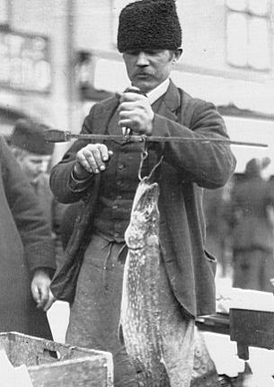 Emil väger morgonens gädda |
De skaffade sig ett torgstånd vid Kornhamnstorg och transporterade själva in
sina alster. Det växte bra på holmarna. Det fanns gott om vatten även om de
många kannorna vittnade om att allt måste bäras upp om det nu inte regnade
tillräckligt. Elström saknades, och saknas fortfarande år 1992, så någon elpump
blev det aldrig. Ivar som var familjens tekniker försökte många år efter starten
konstruera en pump av en brandspruta. Pappan var dock inte imponerad och
frågade vad man skulle ha armarna till. Ja idén fungerade inte heller.
Ivars tekniska kunnande gav dock arbete i det facket när han flyttade "i land". Erik däremot lärde trädgårdsjobbet ordentligt från grunden, gick i trädgårdsskola och fick jobb på samma företag som Ivar; Luma i Hammarby. Erik stannade där över 30 år. Flickorna jobbade samtliga i stan. Märtha började som elev vid DN:s depeschkontor vid Slussen, fortsatte sedan till deras huvudkontor och "steg snabbt i graderna". Hela sitt liv var hon DN trogen. Gertrud hade ärvt både pappans och mammans kunskaper. Hon började på Maria Anderssons blomsteraffär på Västerlånggatan. Hon lärde sig bl a allt inom floristyrket och startade relativt snart en egen affär. Oberoende vilket yrke barnen hade valt när de flyttade så var det en självklarhet att de skulle arbeta hemma varje ledig stund. Även sedan några av dem fått arbete i staden så bodde de hemma första tiden trots att det var både besvärligt och farligt med åkandet över Årstaviken. Farligt att bo på holmarna? Ja, det fanns perioder då isen varken bar eller brast och det berättas: |
|
Det var skoldags. Barnen gick i Maria skola. Läraren kände väl till barnens
svårigheter. En gång vid "dåligt väder" fick Erik frågan hur det var hemma och
att komma till skolan. "Jag jumpade!" Varvid fröken utbrast "men det är farligt". Men fröken tystnade
när Erik samtidigt berättade "Mamma skulle också in till stan och hon jumpade
också".
Märtha missade aldrig sitt jobb på DN. Många gånger jumpade hon. Sockerbåten till bruket hade just brutit ränna på morgonen och flaken drev från varandra. Märthas jumphopp skulle inte räcka. Hon gick iland igen på holmarna och hämtade en lång planka som hon lade mellan flaken och genom att flytta den kom hon iland. En vår under brobyggtiden gick det inte alls med jumpning och plankor. Då klättrade Märtha upp på sista bropelaren, så där 30-40 meter över marken och anlände nykammad med extra rouge på kinderna punktligt till sitt arbete på DN. |
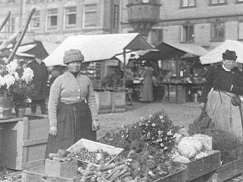 Kornhamnstorg. Mor Ida till vänster |
Mindre nödvändigt var det en annan gång för Ivar att komma iland. Han var bjuden på fest på Riche; smoking, lackskor, paletå och plommonstop. Först arbetsklädd hade han förberett trippen över vattnet till Tanto. Det tog Ivar 2 timmar att komma över. Flera gånger fick han vända. Svetten lackade och något försenad och efter garderobiärens upputsning av lackskorna kunde han blanda sig med festfolket. Hem höll det på att gå riktigt dåligt. Han var bland de sista som lämnade Riche. Ja, han hade ju också varit den sista som kom. Det hade frusit på, och termometern på lönnen visade när han efter sju sorger och tio bedrövelser kom hem att det var 15 grader kallt. Utanför gården växte vårdträdet och på den satt den viktiga termometern. Ivar vågade inte jumpa och att gå i nattmörkret var otänkbart: Han klättrade upp för byggställningarna, gick över bron och klättrade ner för första bropelaren närmast stranden. Byggställningen slutade 2-3 meter över isen! En lång stund hängde han i armarna. Skulle han våga släppa taget. Skulle isen hålla. Kylan bestämde. Han kunde inte hålla taget längre och hoppade. Isen höll intill fundamentet, men det var fortfarande en bit till fast mark. Han gick men fick vända. Isen var där mycket svagare än intill fundamentet. Ytterligare några minuter gick och så bestämde han sig. Tog sats och strax före tunnisen kastade han sig på magen och åkte kana till stranden. "Men jag åkte i min nya paletå!" sa Ivar efteråt och skrattade gott.
|
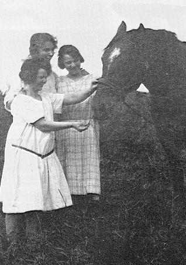 Flickorna på holmarna |
Säkert var det än mer besvärligt när isen brast under både Emil och hästen. Emil
klarade sig snabbt upp men Dockan, hästen, blev kvar. Selen måste först kopplas
bort och det var inte lätt. Emil fick emellertid hjälp och Dockan kunde komma iland.
Släden flöt men kollasten hade delvis lossnat och flöt omkring mellan flaken. Men
även den gången var det någon som höll sin hand över familjen Johansson på
holmen.
Det fanns andra besvärligheter. Tjuvar gick iland på nätterna och plockade åt sig grönsaker. Johanssons hade flera roddbåtar på båda sidor om viken, och det hände ofta att någon var borta. En gång fick Inez ströva, efter hela stranden förbi Liljeholmsbron långt ner på Årstasidan innan hon hittade båten och kunde ro över. Hon var litet envis och gav sig sjutton på att inte ropa på hjälp. En tidigt morgon när vagnen stod fullastad vid bryggan skulle de äta frukost innan Ida och Emil gav sig in till torgståndet. Tjuvarna hade säkert studerat deras vanor. När de efter en halvtimme kom ner för att gå ombord på färjan var lådorna tömda. Den dagen fick de lov att snabbt söka plocka ihop en ny skörd men det blev ju inte detsamma. Ett litet, men kärt bekymmer, var väl att hålla alla borta från Grålle, en annan häst, som tyckte så mycket om snus. Men trots besvärligheterna så var det en idyll. Det var ett mycket bra hem att växa upp i. Och även om holmarna mitt i staden förblev orörda och okända så hände det en hel del på och kring dem som Johanssons kan se tillbaka på. |
Emil och Ida hade inte bara en fungerande handelsträdgård. Det fanns oftast mjölkande kor, ungdjur och en gris. De hade aldrig får eller getter. De gick för hårt åt naturen. Man startade en tid med höns, men gav upp. Ida tyckte att de var för lortaktiga. Och så sålde hon dem till Sköntorp på Årsta eller kanske de bytte mot 1200 stycken astrar i form av plantor. Någon har sagt det! En häst, alltid en hund (en riktig gårdvar) och kattor förstås. Familjen var självförsörjande och kunde också avyttra mjölkprodukter och ibland något kött.
|
Men så tillkom fisket. Emil var duktig på att fiska. Nät, mjärdar, ryssjor och
långrev. Fisket var bäst så länge den sjö fanns som bildades när den första
järnvägen 1860 snörde av Årstaviken från Liljeholmsviken. När år 1929 nya
bron invigdes och landtungan vid den gamla järnvägen schaktades bort uppstod
några mycket dåliga fiskeår. Under muddringarna 1930-31 urusla enligt Emil,
men relativt snart förbättrades fisket igen. Det blev dock aldrig som förr. Största
gäddan under deras liv på holmarna vägde 12 kilo. Det som plockades ur
ryssjorna tidigt på morgnarna fanns vid salutorget några timmar senare. Det
visste alla i Gamla stan.
Grönsakstorget hade sina fasta kunder. Ida och Emil hade också några specialiteter, som de var ganska ensamma om. |
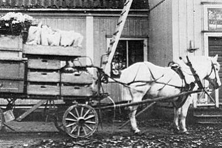 Tidig morgon på holmen. Lastat och klart. |
En dag fick hemmavarande människor på holmarna bevittna en filminspelning med Greta Garbo och Lars Hansson på isen utanför. Det gällde Gösta Berlings saga. Det var 1924 och året därpå söndagen den 3 maj gick man man ur huse på holmarna och promenerade ner till Hammarbyslussen. Det var sista dagen som man kunde gå torrskodda på sjöbotten. Det var stor folkfest och Emil och Ida hade från sitt torgstånd många bekanta så det blev mycket hälsande och glada tillrop. Det var inte så ofta som de var utanför holmarna och roade sig.
Några från holmarna tittade bland tusentals andra på invigningen av Södersjukhuset. Kung Gustav den femte lär från nionde våningen tittat ut över det underbara landskapet med Årstaholmar i mitten och med sin nasala stämma utropat: "Förtjusande! Där skulle man kunna hava ett litet slott". Efter hemkomsten diskuterade dock Ida mest gardinerna på sjukhuset. Nära 2 mil tyg hade gått åt!
Om folket från holmen mer eller mindre kom bort i trängseln vid Södersjukhuset så gick det bättre när bron invigdes av samma kung på senhösten 1929. Då var både Ida och Emil inbjudna och kunde stå så nära att de såg både kungen, kronprinsen och Louise.
|
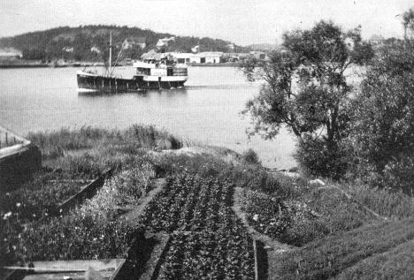 Del av Emils trädgård. Sydvästra udden av holmen. |
Ibland var nöjena betydligt enklare. Man rodde till Årsta och gick till
Södermalms-Liljeholmens skyttebana och fick skjuta gratis i slutet av första
världskriget. Årsta Segelsällskap var i farten och roddtävlingar på Årstaviken
var vanliga.
Under sista kriget, en februarikväll 1943 blev folket på holmarna varse hur farligt det kunde vara att bo intill denna bro, landets mest betydelsefulla. Då föll ryska bomber en kilometer österut i Eriksdalslunden. Tur för SJ och Johanssons. Men mindre trähus rasade, fönster splittrades och även på holmen kändes tryckvågen. Under hela kriget låg soldater ute på vakt som grannar till Johanssons. Alla trivdes med dem. Röda stugan på Bergholmen nyttjades och några kunde bo hos familjen. |
På sidan om de stora invigningarna, Årstabron, Hammarbyleden och Södersjukhuset fanns även mindre. 1900 startade en av Stockholms första kooperativa affärer invid sockerbruket. 10 år senare skulle jubileum hållas. Man tyckte Reimersholmsbrännvinet var för svagt och skickade en häst och vagn till Sundbyberg med mjölkkrukor för att köpa bättre vara. Kvinnorna lade in sill och rullade köttbullar etc och så drog sig jubileumsgänget ut till Årstaholmar i bolagsekan. Det blev en riktig dryckesfest och det var nog förståndigt av arrangörerna att förlägga den till obebodda Lillholmens äng. Emils hade starkt motsatt sig festen. De var helnyktra!
Men jag kan också berätta att när det ibland var fest en trappa upp i gården. Det kunde vara Idas och Emils egen fest eller någon av sommargästernas, då hade Emil en särskild fyrkantig bjälke som sattes upp mitt i deras egen stora salong på bottenvåningen så att inte taket skulle rasa ner när det dansades för fullt ovanpå. Så visst hade man många roliga fester. Några år spelade man egna Bellmansspel därute. Märtha och Per-Olov var bland de aktiva. Och jularna var något alldeles extra på holmarna. Riktigt god julmat och stämning. Någon elektricitet fanns inte. Fotogenlampor och många ljus, vit snö utanför och kakelugnsvärme. Och flera sommargäster kom ut.
Den största festen var när Ivar och Ebba gifte sig på holmarna. Redan ett år tidigare förberedde man blomrabatter och andra prydnader.
Under många år tändes Valborgsmässoelden på Bergholmens topp. Från Tanto körde man ut tjärtunnor och annat brännbart. De använde bolagsekan. Man dansade och sjöng och drack och på grund av det sista var Johanssons besök på Bergholmen de kvällarna på Valborgsmäss lätt räknade.
|
Emil berättade för Märtha om Sellings besök vid midsommar 1946 eller kanske
någon månad tidigare. Han inspekterade gården. Enligt Emil hade man inte sett
skymten av folk från Stockholms stad på 25 år! Gösta Selling fastslog att det var
nödvändigt med skyndsamma reparationer av gården. Han sa också i förbigående att
han inte tyckte om glasverandan. Den kunde man lika gärna riva som att reparera
den. Sedan blev det återigen tyst intill Emils flyttning 1957.
Staden, ja, 20 år tidigare under brobygget blev Emil mäkta förvånad en dag på Kornhamnstorg då en god vän till honom kom fram och hejade och gratulerade! Så småningom fick Emil den fantastiska upplysningen att Årstaholmar förklarats för en egen stadsdel. Detta innebar plötsligt att Johanssons var |
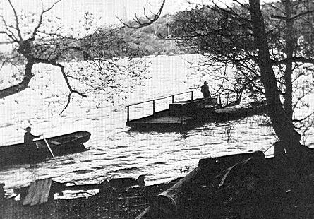 Inez ror och bogserar färjan med far till holmen. |
Antikvarien Lars Bengtsson har vid inventering av gården funnit det märkligt att byggnaden redan från början haft ett kök. I mitten av 1700-talet förlades alltid köket i en särskild byggnad. Man var rädd för elden. Alla byggnader som behövdes för en ensamgård fanns för övrigt. Det fanns flera hus som var lämpliga för sommargäster och Idas stora extrainkomst var dessa sommargäster. De var mycket nöjda och kom tillbaka år efter år. Då kunde man också sälja direkt och slapp dra in allt till torget.
Något år strax efter kriget revs de sämsta byggnaderna. Emil underhöll själv växthus och drivbänkar och till och med utökade de ytorna, det gav mera! Växthusen var intressant uppbyggda. På södra sidan intill de vertikala fönstren hade man placerat de horisontella fönstren till drivbänkar. Man fick nästan dubbel värmeeffekt. Emil talade ibland om tropisk värme.
Kalla vintrar klarade Emil av en god vinterförvaring av exempelvis potatis, kålrötter och andra rotsaker genom en rätt byggd stuka. Även huvudkål kunde läggas där. Från den hämtades väl bevarade - framför allt rotfrukter - hela vintern till salustånden i Gamla stan.
Emil köpte stållina när Katarinahissen byggdes om och den drog han mellan holmarna och Tanto. På så sätt fick den lilla färjan löpa efter linan. I aktern hade han en vickåra, men man kunde också ro om man var två och så småningom försökte man med en utombordsmotor med lång rigg.
Uno Blomquist har i sitt kapitel en bild av färjan på väg tillbaka med Dockan och tom kärra. Här visar vi hur Inez med roddbåt gått över för att bogsera färjan hem. Linan som låg ganska djupt i vattnet kände alla till. Ändå backade en av sockerbruksbolagets båtar vid ett tillfälle rakt in i vajern. Det tog drygt två veckor innan man fått loss båten.
Märtha: "Vi hade ett ljuvligt liv och en mycket skön tid." "Bäst före brobygget." "Och luften därute var nog nyttig ... Vi var aldrig sjuka!"
När arrendet sades upp - året var 1957 - gick Märtha omkring och kramade vartenda träd!
Rune Sahlström
Av Uno Blomquist
Uno tillhör ABF:s och Tantofolkets studiecirkel om Årstaholmar sedan tre år tillbaka. En gång stins vid järnvägen kan han numera från sin kolonitäppa på södra sluttningarna av Tanto dagligen se ut över Årstabron och holmarna. Hans trädgårdsintresse är något utöver det vanliga. Känd bl a som odlare av armeniska björnbär. Han är en av de få koloniägare som prövat på bikupor. Uno kände till biodlingarna på holmarna men trots ihärdigt letande i skrifter och tidningsartiklar fann han inte något om i vilken utsträckning de funnits. (Rune Sahlström)
Det år denna bok ges ut, 1992, har det inte odlats några grönsaker på Årstaholmar. Vilda och förvildade växter har fritt fått tävla med varandra om vad holmarna har att bjuda på av möjligheter för att växa och trivas - eller bli utkonkurrerade. Denna vildvuxna frihet har rått sedan slutet på 1950-talet.
I olika perioder dessförinnan har mycken möda, tid och arbete ägnats de ytor på holmarna som täcks av bördig jord. Träd och buskar har planterats och grönsaker odlats. Men stora delar av holmarna består av berg - en av de tre holmarna kallas inte för ro skull Bergholmen eller Tallholmen.
|
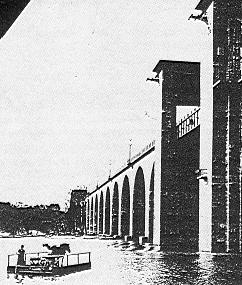 Emil Johansson, Dockan och en tom kärra på väg hem med färjan. |
Bilden härintill visar en man och en häst och vagn, som transporteras
på en liten färja från Tantosidan till Arstaholmar. Det är
trädgårdsmästare Emil Johansson, som återvänder från Kornhamnstorg
i Gamla Stan, där han sålt trädgårdsprodukter, odlade på Årstaholmar
och tidigare på dagen forslade till Kornhamnstorg.
I Bostadsrättsföreningen Tantos årsredovisning 1989 kan man läsa "På Årstaholmar fanns för femtio år sedan en handelsträdgard. En bild från den tiden visar trädgardsmästarens häst, som simmar med ett lass grönsaker efter sig. Sen drog hästen vagnen ner till Kornhamnstorgs salustånd." Denna bild har varit omöjlig att få fram! Finns den? Redan 1904 arrenderade Emil Johansson holmarna av Stockholms stad. Han avled 1956, 76 år gammal. Sterbhuset sade upp arrendet. I mer än 50 år hade Emil Johansson med sin familj bebott den s k trädgårdsmästarebostaden på holmarna, dvs huvudbyggnaden från 1700-talet, och tagit vara på de möjligheter till odling av grönsaker, bär och frukt, som holmarna erbjöd. Bilden här intill från omkring 1924, visar ett av hans drivhus. |
Trädgårdsmästare Emil Johansson fick ingen efterträdare i sitt yrke. Den uppodlade jorden blev vildvuxen. Perioden närmast före Emil Johansson som trädgårdsmästare på Årstaholmar kan man låta omfatta åren 1850-1904 med särskild vikt vid en 10-årsperiod efter 1850. Om denna period har det rent av "skrivits historia" och närmare bestämt av amanuensen i Kungliga biblioteket Gunnar Olof Hyltén-Cavallius (1818-89). Han bodde på Årstaholmar 1850-56 och ägde holmarna ytterligare några år. I sina memoarer "Ur mitt framfarna lif (1882) berättar han om "Lifvet på Årstaholmarna". Det var ett liv fyllt av idylliskt lantliv men också av bekymmer, oro och sorg.
När Gunnar Olof Hyltén-Cavallius första gången besökte Årstaholmar fann han gården förfallen och omgiven av en igenvuxen trädgård. Men han fann också tydliga spår av forntida prakt i det gamla orangeriet (växthus där ljus in¬ släpptes endast genom höga, lodräta fönster på södersidan). Här var stället, där jag ville leva i undangömd frid, syssla med blommor och jordbruk, skriver han. Året är 1850, det år han köpte Årstaholmar. Redan nästa år, 1851, kunde fullastade båtar med frukt och grönsaker sändas till Kornhamnstorg flera gånger i veckan, skriver han. Detta kan förvisso kallas rivstart! Om nu dessa uppgifter är med verkligheten överensstämmande? Det kan man fråga sig.
Det var hustrun som skötte trädgårdarna, skriver Gunnar Olof. Till sin hjälp hade hon säkerligen en hel del tjänstefolk. Husförhör på Årstaholmar år 1853 anger att det var 12 personer utöver familjemedlemmarna, 2 vuxna och 4 barn, som ingick i familjen Hyltén-Cavallius. De flesta av dessa 12 personer tillhörde säkerligen tjänstefolket, men en del kanske gjorde som Gunnar Olof själv, bodde på Årstaholmar men hade sin yrkessysselsättning i stan. Hustrun skötte även mjölkkammaren, skriver Gunnar Olof. De hade också skaffat sig kor. De fägnade sina gäster med präktig mjölk, röda jordgubbar och saftiga frukter, skriver han på ett ställe.
Gunnar Olof Hyltén-Cavallius fann gården utomordentligt bördig. Men försök till nyodlingar på Tallholmen "blev inte annat än ett stort misstag, framkallat genom mitt behov av ökad inkomst", skriver han, och fortsätter med "att denna bergiga holme med sin furuskog hade ett vida högre värde i sitt naturliga skick än vad som kunde fås genom odling".
Med alla sina ljuvliga fröjder hade livet på holmarna jämväl sina tryckande obehag. "Ofta satte jag mig på en sten överst på Tallholmen och blickade sorgsen ner på mina små odlingar och gjorde mig själv bittra förebråelser. Var det ingenting annat än dagligt arbete och bekymmer, som jag bjudit henne, som delade mitt livs glädje och sorger. Även den skönaste medalj har sin frånsida", skriver han. Efter sju år på Årstaholmar flyttade han 1857 in till stan med hustru och barn. De hade fem barn, varav tre fötts på holmarna. Den yngste sonen, född 1854, drunknade i Årstaviken på sin 3-årsdag.
År 1856 hade Gunnar Olof Hyltén-Cavallius blivit intendent för Kungliga teatrarna med tjänstebostad i Hovförsamlingen. Han bodde dock kvar på Årstaholmar ett år, innan han tog tjänstebostaden i bruk. Under ett par år därefter blev nog Årstaholmar sommarnöje - med bibehållen trädgårdsodling - för familjen Hyltén-Cavallius.
År 1859 utarrenderar Hyltén-Cavallius Årstaholmar till trädgårdsmästare Rudolf Stenberg. Trädgårdsodlingarna på holmarna fortsätter därmed som tidigare. År 1865 säljer Hyltén-Cavallius Årstaholmar. I köpekontraktet skriver han:
Säljaren förbehåller sig rätten att under loppet av 1866 eller 1867 efter eget val ur Årsta trädskolor utan särskild betalning bekomma träd och buskar till ett belopp av kronor Tvåhundrafemtio riksdaler Riksmynt efter de värden som i förteckningen över trädskola inventariet av den 15 februari 1861 med herr Rudolf Stenberg finnes upptagna.
Tydligen hade Hyltén-Cavallius även något slags trädskola på Årstaholmar. Av någon större omfattning kan den dock näppeligen ha varit. Päronträd på Lillholmen, upptäckt av Nils-Erik Landell, är säkerligen självsatt men kan möjligen vara planterade och skolade i holmens egen trädgård. En annan intressant upptäckt är navern, som är inplanterad. Navern har en rödaktig ved med vacker masurstruktur och har under minst 200 år använts för bl a tillverkning av musikinstrument.
Även odlad apel förekom, som också gav ett fint snickarvirke. Det är troligt att det finns kulturapel på holmarna eller hybrider av denna. Kulturapeln skiljer sig från den vilda genom sina blads gråludna undersida. Någon av Tantofolkets trädintresserade borde inventera apeln på Årstaholmar.
Under resten av 1800-talet var det tre olika ägare till Årstaholmar - från 1886 Stockholms stad. Odling av grönsaker, bär och frukt fortsätter under denna tid som tidigare.
Alltsedan 1700-talet har holmarnas ägare sett till att man, förutom vanligt tjänstefolk, haft trädgårdsmästare boende på holmarna. Antingen direktanställda eller som arrendatorer av marken.
I en PM daterad "Årstaholmar 9 oktober 1860", har Hyltén-Cavallius bl a skrivit, att år 1790 fanns det på Årstaholmar tobaksplantage och trädgård med flera hundra fruktträd ordnade i regelbundna fyrkanter enligt fransk smak. Det fanns vidare orangeri, drivhus och drivbänkar - allt ytterst förfallet då han köpte Årstaholmar 1850.
I sin PM skriver vidare Hyltén-Cavallius, att trädgården har reparerats med stor kostnad, att alla tre holmarna förvandlats till trädgårdar i engelsk stil, att en trädskola i stor skala anlagts m m. Han framhåller vidare att fisket var utomordentligt givande. Läget fördelaktigt med djupt, friskt och segelbart vatten, nära till Liljeholmens järnvägsstation (sträckan Stockholm-Södertälje började trafikeras den 1 december 1860) och att gårdens areal genom fortgående uppvallning under de senaste 10 åren ökat med flera tunnland vassbänkar och sidvallsäng.
I denna PM av oktober 1860 har allt den gode Gunnar Olof Hyltén-Cavallius tagit till i överkant, rent av skönmålat sina trädgårdsanläggningar m m. Sålunda har han i sina memoarer "Ur mitt framfarna lif skrivit att nyodling på Tallholmen blev inte annat är ett stort misstag, medan han i sin PM av 9 oktober 1860 skriver att alla tre holmarna, alltså även Tallholmen, förvandlats till trädgårdar i engelsk stil. Noteras kan också att han i sin PM framhåller närheten till Liljeholmens järnvägsstation som dock fick sin uppgift ett par månader senare, den 1 december 1860, då bansträckan Stockholm-Södertälje öppnades för allmän trafik.
Man kan spekulera över anledningen till beskrivningen i denna PM av oktober 1860, som utan tvekan i mycket är överdriven. Anledningen kan vara att Hyltén-Cavallius redan då planerade att sälja Årstaholmar. År 1857 hade han flyttat från holmarna in till stan och år 1859 utarrenderade han dem. År 1860, det år han skrev sin PM, hade han fått tjänstledigt från sin befattning vid Kungliga teatern för att år 1861 bege sig till Brasilien som sändebud. När han återkom från Brasilien till Sverige redan 1862 - bosatte han sig i Småland. År 1865 sålde han Årstaholmar.
Som kuriosa kan nämnas att Hyltén-Cavallius startade den långa resan till Brasilien med att ta tåget till Södertälje. Det var i februari 1861. Vid den tiden gick tågen inte längre än till Södertälje. Från Södertälje fortsatte färden genom Sverige och Europa till Lissabon och vidare med båt till Brasilien. Familjen och vännerna tog avsked på stationen, som då kort och gott hette Stockholm, vid den tiden Stockholms enda järnvägsstation, senare kallad Södra Station.
|
Vare hur som haver med en del uppgifter i Hyltén-Cavallius PM av oktober 1860.
Under den tid han var ägare till Årstaholmar - de fem sista åren med
trädgårdsmästare Rudolf Stenberg som arrendator - var trädgårdsodlingen utan
tvekan av stor omfattning. Man kan utgå ifrån att även åren därefter förekom
betydande trädgårdsodling. Men trädgårdsodlingarna var säkert som mest
omfattande under den tid som Emil Johansson var trädgårdsmästare på holmarna
1904-1956.
Från tidigare år finns det även uppgifter om betydande trädgårdsodlingar på holmarna. I sina dagboksanteckningar (1792-1839) har sålunda Merta Helena Reenstierna (Årstafrun) vid flera tillfällen ägnat växtligheten på holmarna uppmärksamhet och beundran. Hon beskriver mängden av fruktträd och blommor, som bl a fanns i orangeriet, nämligen citron, apelsin och lagerbladsträd. Slutet på denna beskrivning låter tilltagen i överkant! Frågan är om inte Merta Helena liksom Gunnar Olof överdriver? |
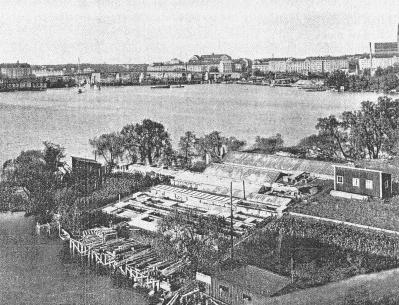 |
Många kända personer har gästat Årstaholmar, bland dem Carl Michael Bellman. År 1785 skaldade han ute på holmarna till värdfolkets ära (värd var kamreren Jacob Möller) en Måltidssång, införd som No 9 i Fredmans sånger. Beträffande Jacob Möller så är han den förste ägaren av holmarna som beskrivs för sin trädgårdskunnighet även om han endast nyttjade gården som "sommarbostad".
Carl Michael Bellman:
Nå ödmjuke tjänare, gunstig herr värd!
Klang! en klunk uppå skinkan, innan steken blir skärd
Sillsallaten förträfflig med äpplen och lök,
Delicieux den kalkonen i sitt flottiga kök.
Färskpotatisen, salladen, löken och äpplena kom från gårdens egna odlingar. Kalkonen hade ätit sig fet på holmarna! Av den så ofta omtalade och lovordade växtligheten på Årstaholmar, med trädgårdsodlingar och frukträd, finns idag ingenting kvar.
En parentes är den spontana odlingsverksamhet som Arne Norén har bedrivit på Årstaholmar. Det var år 1975, som Norén letade reda på en bra odlingsplats på Ahlholmen, satte utan vidare spaden i jorden - odlade hallon och potatis. Han byggde sig också en liten stuga. I 14 år hade Arne Norén och hans hustru Hildur sin kolonitäppa. År 1989 drog de sig tillbaka på grund av ålder.
Trots att Arstaholmar är Stockholms stads medelpunkt (!) är de i hög grad okända för gemene man. Det är ytterst få Stockholmare - inklusive Söderborna - som varit ute på holmarna. Dessa omständigheter må förklara varför Arne Norén aldrig blev krävd på arrende av Stockholms stad! Norén fick hålla på med sina odlingar utan byråkratisk inblandning.
Arne och Hildur lämnade ett trevligt minne efter sig. De planterade två vackra granar. Vintertid när snön ligger kvar, är granarna en prydnad på Ahlholmens högsta punkt. Gran har aldrig vuxit på holmarna! De två är ett kuriost minne av en rolig episod i Årstaholmars historia.
När huvudbyggnaden på Årstaholmar har flyttats en bit åt väster för att ge plats åt den nya parallellbron, får vi hoppas att trädgårdsodlingarna kring det gamla 1700-talshuset återuppstår i mindre skala - att man kan beskära vårdträdet och täcka det under brobyggnadstiden - och att området öster om broarna förblir naturreservat!
Av Nils-Erik Landell
Nils-Erik är en av de aderton i Tantofolkets nätverksstyrelse, överläkare,
välkänd naturskribent och fotograf. Författare till ett 40-tal böcker om kultur,
natur och miljö.
1992 presenterade Nils-Erik Landell sin senaste bok "Den växande staden". Ett
underbart bokverk om Stockholms bebyggelse och naturhistoria. En bok som
bör läsas parallellt med denna om Årstaholmar.
(Rune Sahlström)
|
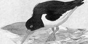 |
Elfte april 1992 promenerar tidigt om morgonen två strandskator i
sankängarna på Ligna i Tanto. De häckar på Årstaholmar men har sin
matplats nedanför minigolfbanan på ställen som alltid är vattensjuka om
våren och därför tvingar upp matnyttiga maskar i ytläge.
Strandskatorna och andra kunde ha förlorat sin matplats 1990 på denna strand. |
Tantofolket, en del av dem som protesterade promenerade elfte april till Årstaholmars färjeläge för att avnjuta de tre små holmarnas vegetariska kost: Nässelpuré i crepes som serveras med ett fruktigt välsmakande älgörtste. Här firas den årligen återkommande nässeldagen. Strandskatorna firar också vårens återkomst. I ett enda svep har de kommit flygande in från sina övervintringsplatser utmed Västeuropas kuster! Tantofolket är sportklädda. Strandskatorna bär högtidlig festdräkt i svart och vitt med lång lackröd näbb.
|
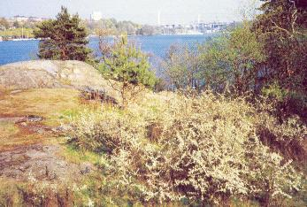 Östra berget |
Ett ambassadörspar på tillfälligt besök från Årstaholmar där de har sin häckningsplats. Att se strandskator promenera som nyanlända vårfåglar innanför en storstads tullar är något unikt! Fågeln har börjat sprida sig alltmer utmed Östersjöns kuster och därifrån till och med börjat tränga in i insjövatten. Anledningen kan vara Östersjöns tilltagande algväxt som följd av övergödning från jordbruk, bilarnas nitrösa gaser och reningsverkens utsläpp. Algerna föder vattenlevande smådjur som i sin tur föder strandskatorna. I Tanto uppsöker de för övrigt en gammal strandmiljö, ty här flöt avflödet från Fatburssjön via Zinkensdamm och en nedströms belägen fiskrik damm under 1700-talet ut i Mälaren. Sedan några år häckar ett strandskatepar vid Drottningholm men i övrigt är Årstaholmars par tämligen ensamt på Mälarsidan. De får vara i fred i en vildvuxen strandmiljö därför att holmarna saknar broförbindelse och därmed har relativt få besökare. |
Längre fram på sommaren brukar jag höra strandskatorna flygöva med sina ungar. Kubik, kubik är deras genomträngande läte som ekar mot Reimersholmes husrader när de flyger in i Mälaren. Så glädjer fåglarna, från sina fredade häckningsplatser, människor långt utanför holmarnas farvatten. Genom sin relativa isolering samspelar Årstaholmar paradoxalt nog ännu intensivare med sina omgivningar!
| Mot norr ligger Tantolunden. En av många stadsparker som på bergiga höjder anlades just vid sekelskiftet. Rika almbestånd har nu vuxit upp till höga träd. De har särskilt attraherat den relativt stora, papegojliknande fågel som heter stenknäck. Tidigt om morgonen kan man uppleva den betagande synen av stenknäckshannen som matar sin hona så att hon blir särskilt välnärd inför äggläggningen! Det sker tidiga mornar i april då fåglarna livnär sig av almens nyss utslagna blommor med deras näringsrika frömjöl. Stenknäcken är en relativt obeaktad fågel som ger sig tillkänna med ett tickande läte. Framåt sommaren blir den helt osynlig i de höga almarnas lövmassor. |
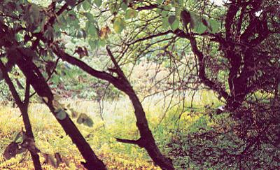 700 kvm spireafält med uttorkad apel |
Årstaholmar får då plötsligt en unik betydelse. Träden påverkas där inte av föroreningar i samma omfattning. Dessutom kan man låta träden åldras och naturligt dö på ett helt annat sätt än i den socialt anpassade parken där fritidsförvaltningen känner sig tvungen att med högt uppdrivet säkerhetstänkande gardera mot olycksrisker och såga ned varje rötskadat träd. När de höga almarna någon gång avverkas i Tantolunden kan den ovanligt stora kolonin stenknäck flytta över till Årstaholmars träd som redan gästas av den färggranna fågeln med sitt ovanligt exotiska utseende.
|
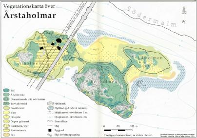  Vegetationskarta. Examensarbete i kartografi vid Naturgeografiska institutionen, Stockholms Universitet. Utfört av Jesper Knutson, 1992. Vegetationskarta. Examensarbete i kartografi vid Naturgeografiska institutionen, Stockholms Universitet. Utfört av Jesper Knutson, 1992.
|
På motsvarande sätt kan holmarna bli en fristad för skogsduvorna vilkas entoniga, sågande läten kan höras kring Årsta gård på Södertörnssidan. Där finns också kungsfågel som under vinterns meståg dyker upp i Bergholmens höga tallar på jakt efter insektspuppor, dolda i barken. Holmarnas relativa orördhet exemplifierades under många år av Stockholms enda häckande hornugglepar i ett av de höga träden tätt intill den vackra, akveduktliknande järnvägsbron. Stilla försommarnätter kunde hyresgästerna i Tantos bostadsbågar genom öppet fönster höra uggleungarnas, höga, genomträngande läten. Miljön är än idag lika orörd och hornugglan kan alltså vilken vår som helst åter komma och häcka. Årstaholmar är en refug, en tillflyktsort, som snabbt ökar i betydelse då stora trädbestånd samtidigt tas ned och förnyas i de centrala parkerna. På Årstaholmar kan träden åldras och dö på ett naturligt sätt och samtidigt hysa den rika insektsfauna som lockar fåglar. |
Elfte april är holmarna fyllda av sjungande rödhakar. En silvrigt späd sång som i ljudkaskader exploderar här och där i trädens skuggor. En större sällskapsresa rödhakar gästar holmarna samtidigt med Tantofolket. De flesta fåglarna provianterar under dagen för att om natten flytta vidare mot norr. Men några rödhakar blir kvar i Årstaholmars vildvuxna och särskilt rödhakevänliga miljö.
| Just som vi stiger iland på Årstaholmar möter strax sydost om gården stora mattor av en speciell sorts fyllda snödroppar. Ett levande kulturminne som med sina utbredda blomstermattor kan vara samtida med 1700-tals gården. Just våren 1992 är de vita kalkbladen en aning brunfläckiga, ty de har skadats av kylan som följde efter några ovanligt tidiga varma dagar, i många av blommorna är både ståndare och pistiller omvandlade till kalkblad och dessa blommor kan bara sprida sig vegetativt genom rötterna, då varje lök sänder ut två sidolökar. Den här typen av snödroppe är bevisligen en äldre odlingsform, som sannolikt tagits in från Holland under 1700-talet. Sådana sterila blommor brukar av botanisterna kallas monstruösa men är i sin skönhet långtifrån några monster! De till kalkblad omvandlade ståndarna syns som bjärt gula stråk i bladens mitt. Kalkbladen fyller upp hela blomman i varv efter varv. När friluftsmuseet Skansen våren 1991 fyllde hundra år ärades dess upphovsman, Artur Hazelius, genom att några tuvor av Årstaholmars unika snödroppe flyttades till hans grav. Det förhöll sig nämligen så att den unge Artur Hazelius inspirerades av den svenska etnologins förgrundsgestalt, Gunnar Olof Hyltén-Cavallius, som våren 1851 flyttade till Årstaholmar. |
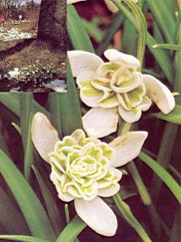 |
Här finns alltså ett samband mellan Årstaholmar och Skansen som manifesterades i några snödroppetuvor på graven, vilka dessutom är av olika typ. I Årstaholmars blomstermattor finns en del tuvor där ståndarna är fristående medan andra som nämnts är helt förvandlade till kalkblad. Snödroppetuvorna som planterats på Hazelius grav utgör i det avseendet ett representativt urval. När jag våren 1992 uppsöker graven strax öster om Hällestadsstapeln på Skansen har de monstruösa, synnerligen vackra snödropparna slagit ut. Låt vara att de i likhet med andra vårblommor just det här året lider av den långsträckta vårens vankelmod med ideligen påkommande, smärre snöstormar.
|
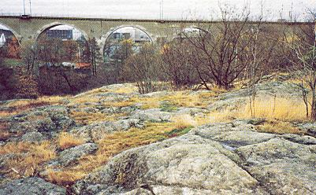 Torra hällemarker. Bergholmen 17 m ö h. |
En dag i början av oktober 1990 finner jag det kanske mest unika i Årstaholmars växtvärld. Ett par päronträd på Lillholmen längst i öster med små, välsmakande frukter som inte verkar tillhöra någon odlad sort. Jag skickar päronen till landets samlade fruktexpertis. Alla är de överens. Aldrig tidigare har spontansådda päronträd givit så här välsmakande frukter. De är en särskild, tidigare okänd sort. De gamla Årstaholmspäronträden är från 1800-talet och har tydligen sparats genom sina unika egenskaper, direkt sprungna ur naturen. Annars är det som bekant ytterligt ovanligt att någon välsmakande frukt kommer av äppel- och päronkärnor. De speciellt framodlade sorterna kan bara vidmakthållas genom inympning av grenar och kan därigenom i det närmaste få evigt liv. |
Just omkring päronträden finner vi elfte april 1992 ovanligt välutvecklade mattor av brännnässla, lämplig för plockning. Låt vara att nässelbladen redan utvecklats så långt att de bränner fingrarna. I ängsmarkerna syns alldeles nygjorda, distinkt grävda gropar av den sort som görs av grävlingar när de söker efter något ätbart. Ibland har jag också sett rådjur smyga undan i skogen. Här löper de knappast risken att stressas ihjäl, som när de förirrat sig in i stenstadens små grönområden. Nyanlända rävsparvar sjunger i vassarna. En hanne visar vackert upp sig på vår naturpromenad. Huvudet och strupen kolsvarta. Vitt mustaschstreck som bakåt går över i en vit halsring. När jag senare om våren paddlar förbi de stora vassarna hörs rödsångare sjunga hela dagarna. Ibland någon rävsångare, betydligt rörligare i sången. Sothönsen simmar fram och åter mellan vassarna, mellan gul och vit näckros, med nickande huvudrörelser.
| Håll gärna utkik efter rörhöna! Den relativt milda vintern 1991-92 håller ett exemplar till utmed Bergsunds strand och i Långholmsviken. Ett fiskgjuspar passerar relativt ofta Reimersholme för att fiska i vattnen runt holmarna. Stilla mornar syns hägrars gestalter på de vrak som just sticker upp ovan vattenytan. De låter fisken komma till sig och kastar med en blixtsnabb rörelse näbben ned i vattnet. Sens moral för besökare är att stilla avvakta i någon av holmarnas miljöer så kommer upplevelserna till dig! En ormvråk som jag ser cirkla högt över Ahlholmen. En kattuggla som tyst jagar mellan stammar i skymningen. En stor sparvhökhona som flyger ut över vattnet i ömsom snabbt klippande vingslag, ömsom glidflykt och attackeras av skrattmås och gråtrut. Eller kan du bege dig till holmarna den första, riktigt varma vårdagen och se mängder av citronfjärilar, som genast parar sig och gärna lägger ägg på brakvedsbuskarna som växer i nordsluttningarna nedanför södersjukhuset. Aurora- och nässelfjäril flyger över öppna gräsytor. Just när jag beundrar en ringduva som sitter i en grå, död gren i en tall på Tall- (eller Berg-) holmens topp ser jag snett nedanför mig en lätt misshandlad sorgmantel sätta sig på en lönngren där bladen just slår ut. Den stora dagfjärilen dricker de skadade trädens sav om våren. |
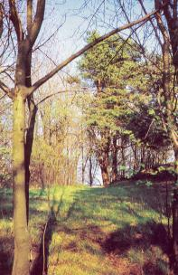 Tallskogsgläntor. Bergholmen. |
Årstaholmar är i första hand en unik miljö för sina möjligheter. De har med sin ostörda miljö kapaciteten att ta emot häckande fåglar som annars finner stadens parker alltför mycket skötta för att tillfredsställa människans behov. Storskraken häckar på ön i gamla träds håligheter. Knipan som regelbundet syns i farvattnen kan komma att häcka på samma sätt. Särskilt om man sätter upp några knipholkar. Efter att ha varit sällsynt i Sörmland ända in på 1940-talet har knipan blivit så vanlig att den närmat sig Stockholm. Ökningen kan bero på just uppsättningen av holkar, minskad jakt och knipans möjligheter att få ut alla sina små ungar därför att försurningen i många sjöar slagit ut fisken. Gäddan kan då inte snappa bort ungarna som dessutom slipper konkurrera med småfisk om vattnens insektlarver. Fågellivet förändras ständigt, men miljöerna är mer beständiga. I en snabbt föränderlig storstad är den orörda naturen som mest sällsynt och just därför har Årstaholmar en ovanlig förmåga att härbärgera nya gäster. Gräsanden som nu är så vanlig var en riktigt sällsynthet i början av seklet. Skrattmåsen existerade över huvud taget inte förrän på 1930-talet. Om skrattmåsarna i ökad omfattning börjar häcka i Årstaholmars vassar så ger de också skydd åt viggens bon. Vid färjeläget ser jag en hel flock i vårens praktdräkt. Hannen i svart och vitt, med sirlig tofs på huvudet och blekblå näbb som bleknar mot spetsen. Honan chokladbrun, mörk.
Om man vistas mycket på holmarna finns möjligheten att möta uppåt sjuttiofem olika fågelarter. Trettiotalet är säkra häckfåglar inklusive ett fasanpar vars närvaro hörs genom hannens ljudliga, spruckna trumpetstötar.
Tacksammast för flanören från mitten av maj är häckande näktergal i holmarnas vildvuxna, djupt skuggade knäckepilsmiljöer. Hannarna sitter i holmarnas skydd samtidigt som deras sång i första hand berikar Tantos strandpromenad. Så vill man gärna att holmarnas fågelskyddsområde skall fungera. Här ges en fristad åt fåglar som sedan kan glädja storstadsmänniskan långt utanför holmarnas farvatten. Näktergalen fanns i Stockholm på 1700-talet. Försvann helt under 1800-talet, förmodligen för att den växande stadens naturområden blev alldeles renbetade av kreatur ända ned till stränderna. I det igenväxta landskapet ökar näktergalen åter under 1900-talet.
|
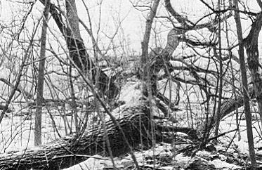 Knäckepil som krälar ut i vattnet likt ett amfibiskt monster och skjuter grenar som pilbågspilar. Underbara träd för barn att klättra på. Foto P S Lindberg 1983. |
Skall Årstaholmar över huvudtaget skötas i framtiden så bör de skötas så att den ovanliga omväxlingen i naturtyper behålls. Tonvikten bör läggas på den orörda naturskogen, ty den blir som framgått alltmer en sällsynthet i Stockholm. Vad som i de socialt anpassade parkerna betecknas som sjukdomar hos träden, blir på Årstaholmar exempelvis vackra, spännande trädsvampar. Se bara på de fantastiska knäckepilar som möter redan vid bron mellan Lill- och Bergholmen! Där ser jag de grova stammarna översållade av eldticka! En typisk trädsvamp för just knäckepil. Vid ett höstligt besök ser jag också mängder av fjällig tofsskivling som växer på trädens rötter och platticka som växer saprofytiskt på lövträden. Den gömmer sitt mycel, själva svampkroppen, i multnande trä, och de synliga svamparna är som frukterna på ett träd. Så fungerar i stort sett alla svampar och även sällsynta sorter blir därför svåra att utrota, bara miljön finns kvar! |
Som fågelskyddsområde markerade Tantofolket tidigt våtmarksområdena norr om Bergholmen, stenbron över till Lillholmen och hela den holmen. Under sju år har Tantofolket i flera skrivelser sökt få till stånd fågelskyddet. Ärendet har bollats mellan olika myndigheter. Tidigt våren 1989 skrev föreningen till fritidsförvaltningen helt kort: "Nu kan inte fåglarna vänta längre. I föreningens namn sätter vi nu upp skyltar". En interimistisk åtgärd i avvaktan på stadens skötselplan för reservatet. Och i en skötselplan ingår fågelskyddet under häckningstiden. Enligt de presenterade kartorna skulle fågelskyddet under april till och med juni omfatta knappt halva naturreservatets areal.
|
Som en omistlig del av den här miljön ser jag just knäckepilsmiljön alldeles
öster om Cyrillus Johanssons vackra järnvägsbro från 1924-29. De gamla träden
fanns hundratals år före bron. En parallellbro som ivrigt diskuterades 1992 skulle
öster om den gamla järnvägsbron alldeles förstöra Stockholms mest ursprungliga
knäckepilsmiljö. Genom att holmarna har en så omväxlande karaktär är också
trädbestånden av ovanligt många sorter på en så liten yta. Samma förhållande
gäller blommorna.
Årstaholmars trädbestånd har särskilt intresserat japanen Nob Takei som efter en trädinventering 1978 förfärdigade en unik karta. Den är oerhört informativ och samtidigt en vacker exponent för den japanska traditionen att vörda träd som individer. Näverlönn på Ahlholmen har fått sin egen symbol |
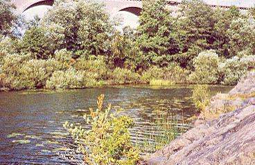 Södra viken |
|
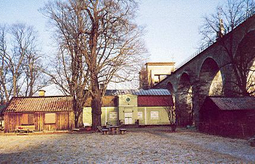 Gården med sina vårdträd, kastanjer och lönnar. |
Runt den gamla gården finns givetvis de mest magnifika parkträden som lämningar av den park som fick sin utformning på 1700- och 1800-talet. Vårdträdet är en lönn - förmodligen lika gammal som gården från 1742. Omkretsen är 4,25 meter i brösthöjd. Höjden överstiger med några meter Årstabrons fyrtio meter! Norr om gården står en mycket märklig pelarek. Här finns också ett par nunneörtsarter. De slår ut relativt sent i nordläget. Här kan du leta efter Corydalis pumila - sloknunneört - med en kort blomklase som verkar sloka. Blommorna är ljusröda med rak sporre. Här ser du också smånunneörten - Corydalis intermedia - som lättast känns igen på sina hela stödblad strax under varje blomma. |
Tre holmar som smält samman till en enda svårfångad, oregelbunden kärna långt in i den välordnade storstadens själ! När Leif Berndtsson, som sköter färjan, drar igång det motordrivna kraftverket för att ge ett flämtande ljus åt den gamla gårdens glödlampor är stämningen som på ett avlägset fjällhemman! Minnena sitter i väggarna bakom lager av flagnade tapeter. I en idyll, svårtillgänglig med ändock huvudstadens centrum, samlades de förnämsta litterära och konstnärliga personerna på gården som Gunnar Olof Hyltén-Cavallius förvärvar 1850. Redan några år tidigare stiftade Hyltén-Cavallius Konstnärsgillet tillsammans med bl a August Blanch, Herman Sätherberg, Olof Strandberg och George Stephens. Han hade påbörjat sitt banbrytande verk "Wärend och Wirdarne". Varje tisdag samlades gillet i Kirsteinska huset i Clara, men också vid många tillfällen i mindre grupper ute på holmarna.
|
Konstutställningarna
och teaterföreställningarna hölls på De la Croix' hus på Brunkebergstorg, men
förberedelserna gjordes på Årstaholmar. Det förekom ofta musik i olika former, man
diskuterade allt mellan himmel och jord, åt gott och drack något litet men man spelade
aldrig kort!
Jag skrev tidigare om kopplingen Hylten-Cavallius och Hazelius. Här finns mer omfattande engagemang på det kulturella området. Hyltén-Cavallius var en tid chef för Kungliga Biblioteket, en tid därefter chef för Kungliga Operan. Hyltén-Cavallius stora intresse och kunskaper i folklivsforskning resulterade i byggandet av Sveriges första hembygdsmuseum i Växjö. Detta visar en märklig bredd i hans storhet som forskare och författare. Arkeologen |
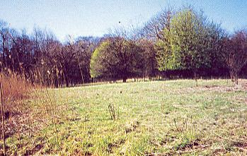 Ängen på Lillholmen |
|
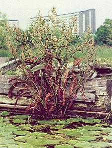 Östra vrakviken. Foto P E Lindberg |
Hästkastanjen har här en av sina rikligaste, självspridda förekomster efter att på 1600-talet ha tagits in till Stockholm som parkträd. Skogslinden har stora bestånd som bör lämnas orörda och inte förparkas. Den rikliga förekomsten av skogsalm kan ha vilt ursprung och kan som nämnts bli mycket betydelsefull i framtiden för Tantos ovanligt stora stenknäckskoloni. Mitt på Årstaholmar finns rikliga bestånd av hägg och ask. Här på holmarnas sydkant ser jag sent om hösten berberisbuskens, små, avlånga, röda bär. Buskviolens tuvor lyser blå om våren. Här finns trettiotalet, grova, knotiga skärgårdstallar på Bergholmens hällmarker vilkas kanter smyckas av gult lysande vårtörel. Fuktlövskogen med klibbal och knäckepil sträcker sig ned mot myr och öppen fuktmark där märkligt nog Kalmus växer, vilken med säkerhet är införd från Orienten. Kalmusroten används i örtläkekonsten som magmedicin med främst gasdrivande verkan. Saftigt hög och grön har växten en karakteristisk, snett uppåtriktad, cylindrisk blomkorg med gulgröna blommor. På Årstaholmar liksom i övrigt på våra breddgrader är växten steril och sprider sig som knäckepilen vegetativt. I våtmarken syns sent om sommaren nickskärans brungula blomsterkorgar. |
Den tidigare välordnade parken och odlingarna kring gården på Ahlholmen har givit en ny typ av omväxling. Det viktiga är att de små holmarnas mosaik av biotoper vidmakthålls som livsrum. Även de nakna marker där ruderatväxter, som annars försvinner i vegetationen, får sin chans.
Tio år har gått och över 100 Söderbor har den elfte april 1992 åkt med den lilla färjan ut till den tredje nässelplockardagen. Leif Berndtsson får köra fyra turer ut och lika många tillbaka till Tantostranden. Snart finner jag att Tantofolket verkligen gör skäl av att vara opolitiskt. Över alla partigränser är alla överens om att naturen på Årstaholmar inte får vårdas eller på annat sätt störas och det gäller då främst arealen öster om den nuvarande Årstabron.
Tio år har gått sedan en programutredning för Tanto med Årstaholmar presenterades. Jag fick då tillfälle att yttra mig såsom sakkunnig:
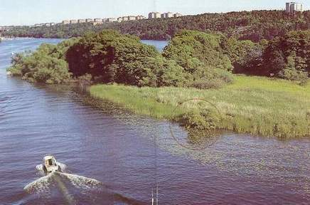
 Inlagd cirkel av den fjärde holmen
Inlagd cirkel av den fjärde holmen
"DESSA SVÅRUPPNÅELIGA VILDVUXNA HOLMAR ÄR NÖDVÄNDIGA FÖR BALANSEN I EN STORSTADS SJÄL! SKULLE INTE NÅGOT DÖ INOM OSS OM DEN ALLRA SISTA ÖN BLIR HELT UTRÄTAD OCH FULLKOMLIGT GENOMPLANERAD?"